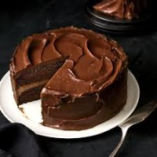
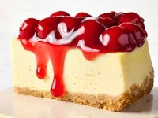
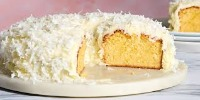
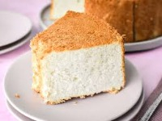
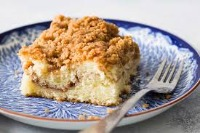
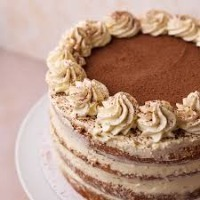
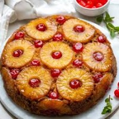
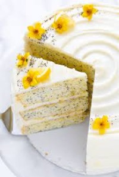

| Picture | Cookie Types | Description | Price | Allergens | On Hand |
|---|---|---|---|---|---|
|  | Classic Chocoalte Cake | Rich, moist layers of deep chocolate sponge filled and frosted with silky chocolate buttercream. A timeless indulgence for true chocolate lovers. | $20 | Wheat (gluten), Eggs, Milk, Soy | 12 |
| Classic Vanilla Cake | Light, fluffy vanilla sponge made with real vanilla extract and finished with creamy vanilla frosting. Simple, elegant, and always satisfying. | $20 | Wheat (gluten), Eggs, Milk, Soy | 12 | |
| Red Velvet Cake | A soft, velvety crimson cake with subtle cocoa notes, layered with smooth cream cheese frosting. Beautiful, bold, and irresistibly sweet. | $20 | Wheat (gluten), Eggs, Milk, Soy | 12 | |
|  | Cheese Cake | Creamy and decadent baked cheesecake on a buttery graham cracker crust. Perfectly smooth with a hint of vanilla classic comfort in every bite. | $20 | Milk, Eggs, Wheat (gluten), Soy | 12 |
|  | Coconut Cake | Tender coconut sponge layered with coconut cream frosting and topped with toasted coconut flakes. A tropical treat that’s sweet, light, and dreamy. | $20 | Wheat (gluten), Eggs, Milk, Soy, Coconut (tree nut) | 12 |
|  | Angel Food Cake | Delicate and airy vanilla sponge made with whipped egg whites for a melt in your mouth texture. Perfectly sweet and heavenly light. | $20 | Eggs, Wheat (gluten) | 12 |
|  | Coffee Cake | Soft, cinnamon spiced cake with a buttery streusel topping. Perfect for breakfast, brunch, or an afternoon pick me up with your favorite coffee. | $20 | Wheat (gluten), Eggs, Milk, Soy | 12 |
|  | Tiramisu Cake | Inspired by the Italian classic moist espresso soaked layers filled with mascarpone cream and dusted with cocoa powder. Luxurious and irresistible. | $20 | Wheat (gluten), Eggs, Milk, Soy | 12 |
|  | Pineapple Upside Down Cake | Golden brown cake baked with caramelized pineapple rings and cherries. Sweet, sticky, and full of nostalgic charm. | $20 | Wheat (gluten), Eggs, Milk, Soy | 12 |
| Strawberry Shortcake | Fluffy vanilla sponge layered with fresh strawberries and whipped cream. Light, fruity, and perfectly refreshing. | $20 | Wheat (gluten), Eggs, Milk, Soy | 12 | |
|  | Lemon Poppy Seed Cake | Bright and zesty lemon cake speckled with crunchy poppy seeds, topped with a tangy lemon glaze. A sunny slice of citrus perfection. | $20 | Wheat (gluten), Eggs, Milk, Soy, Poppy Seeds | 12 |